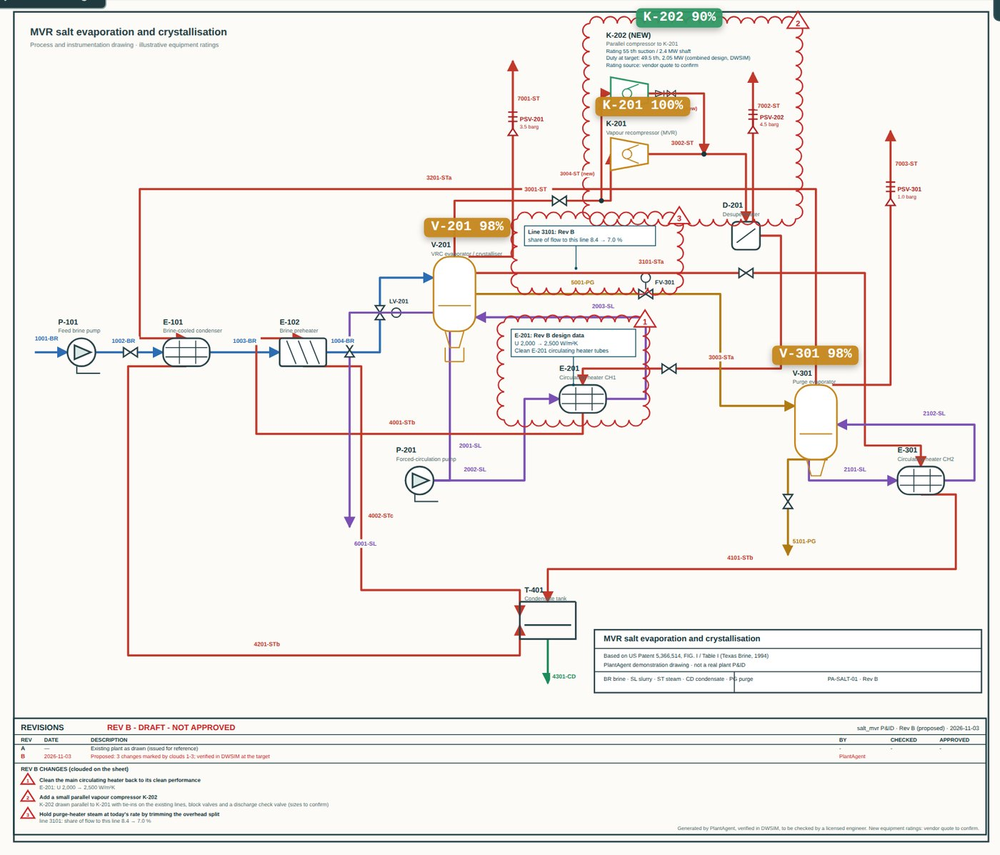

Scanned P&IDs, patent figures and data sheets become the first simulator model, with every assumption listed.
For engineers changing an existing plant
Muse proposes. Physics checks. Engineers approve.
A debottleneck that crosses process, electrical and safety usually means weeks of hand-offs before anyone knows what really limits it. PlantAgent puts Meta's Muse models on the drawing and DWSIM, pandapower, WaterTAP and Cantera behind every proposal, so you get a checked draft change, the numbers that failed, and the items still waiting for a human.
Open source. Every output is a draft for review by a licensed engineer.

The loop, on a drawing it had never seen
The agent is checked, refused, and tries again
BASF's official DEXPI example, uploaded unchanged. Goal: twenty percent more feed. Every number below came from the simulator, not the model.
- 01 · Muse readsBuilds a DWSIM column from the file
The column floods first, at +13 %. The process duty the drawing does not state is labelled an assumption.
- 02 · Physics says no+10 % feed case fails
Reflux 1.5 and a larger bottoms draw pass at the target, then fail the envelope check. The numbers go back to Muse.
- 03 · Muse revises600 mm shell: 61 % of flood
Against an 80 % limit; purities, both envelope cases and 48 of 48 uncertainty samples pass. Vendor to confirm.
- 04 · A second Muse attacks8 bounded bad days
Hot feed, low pressure, fouled trays. DWSIM referees: all eight stay inside the modelled limits, worst 90 % of flood.
- 05 · An engineer decidesNothing is approved by AI
Failed and open items need a disposition, a reviewer and a separate approver before the change freezes.
Three loops, $8.39 of open-weight model calls. Full record
Why open weights matter: the Meta-hosted endpoint refused the UCTE blackout prompt four times (content policy). Muse Spark Open ran the same engineering loop; redispatch plus opening the 220 kV tie passed line limits and N-1 (0 violations). An availability result, not a quality comparison.
Evidence
Three plants, three different lessons
Unseen drawingBASF column K 2750
No hand-written files. Open-weight Muse built the model, was refused, and reached a 600 mm shell that passes the process screens.
Vendor confirmation open Real plant, blindShell Norco C2 splitterFrom Shell's pre-revamp data with the outcome withheld, Muse re-trayed the same shell, as Shell did: 74 % of flood vs Shell's measured 64.7 %.
5 match · 3 partial · missed the feed-tray move Approval blockedVacuum-salt plantDWSIM reaches +20 % with cleaning and a parallel compressor. The load flow puts the transformer at 133 %.
Process passes · electrical fails · not approvableWhat PlantAgent will not do
- Approve a change. It records the engineer's decision; names are workflow records, not e-signatures.
- Replace the vendor, the HAZOP or relief sizing. Those stay open items with an owner.
- Hide what it assumed. Missing data, drafted ratings and uncalculated disciplines are shown, not filled in silently.